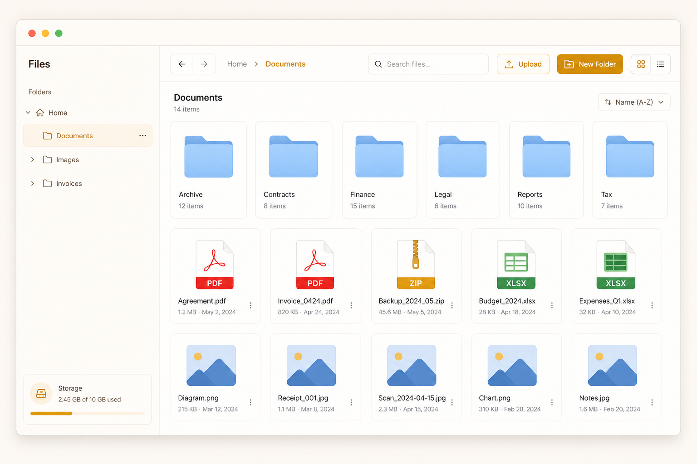
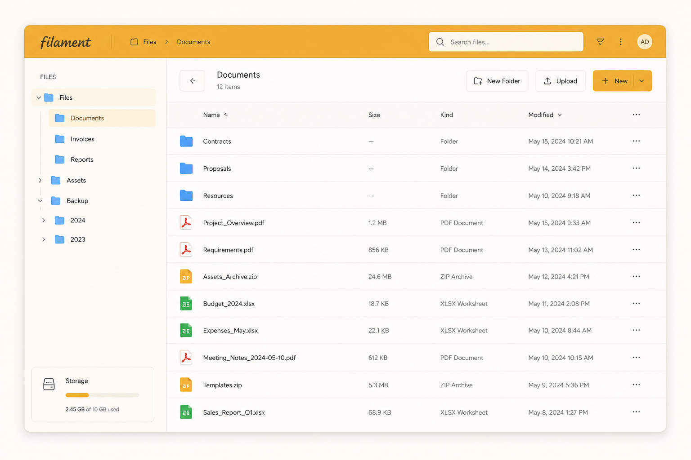
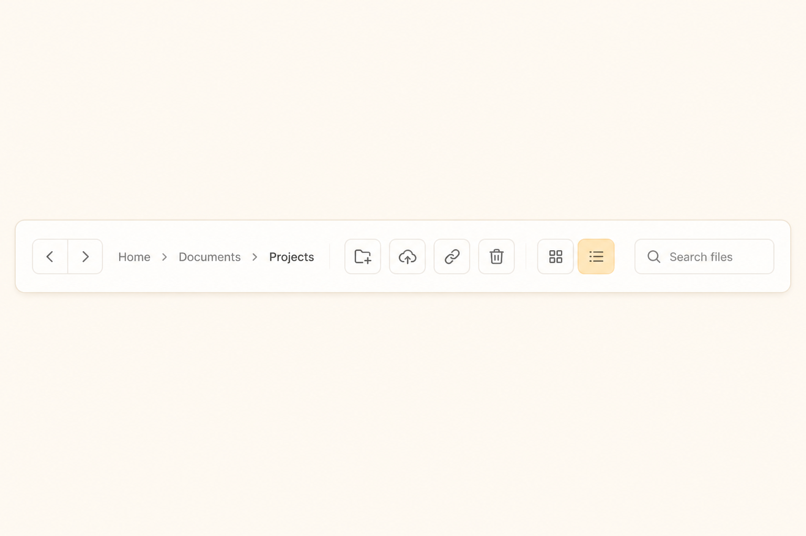
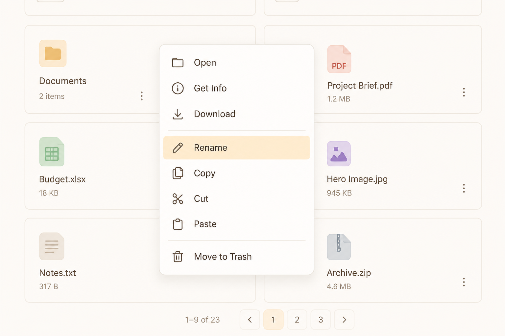
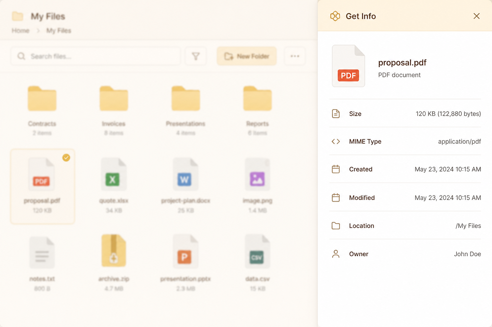
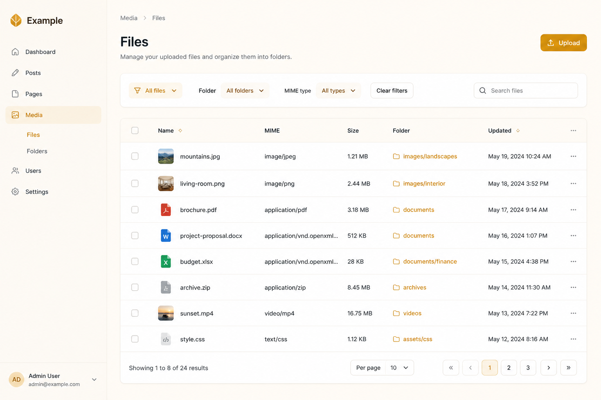
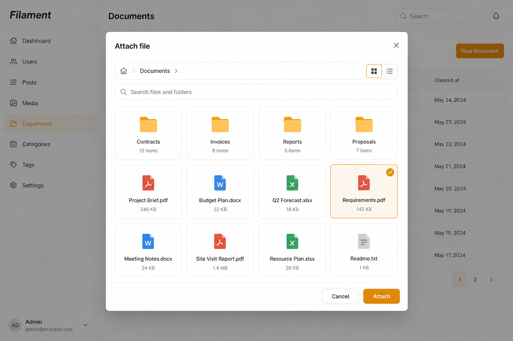

Filament File Explorer adds a Finder-style file manager to your Filament panel, backed by Spatie Media Library and scoped per owner record.


Surfaces
- Explorer page — sidebar tree, grid/list, toolbar, context menu, Get Info, clipboard
- Files table — flat Filament table for power users
- Form picker — attach explorer media into forms
- Authorizer — gate every action with a small contract
Requirements
- PHP 8.2+
- Laravel 11–13
- Filament 4 or 5
- Spatie Media Library
Install the package, run Media Library migrations, then register the Filament plugin.
composer require ardavan/filament-file-explorer:"^0.5" -W
php artisan vendor:publish --provider="Spatie\\MediaLibrary\\MediaLibraryServiceProvider"--tag="medialibrary-migrations"php artisan filament-file-explorer:install --migratephp artisan vendor:publish --tag=filament-file-explorer-assets --forcePanel registration
use Ardavan\\FilamentFileExplorer\\FilamentFileExplorerPlugin;
publicfunction panel(Panel $panel): Panel
{{
return $panel
->viteTheme('resources/css/filament/admin/theme.css')
->plugin(FilamentFileExplorerPlugin::make());
}}Theme (required)
Explorer Blade views use Tailwind utilities. Source the package views and rebuild.
@import '../../../../vendor/filament/filament/resources/css/theme.css';
@source '../../../../app/Filament/**/*';
@source '../../../../resources/views/filament/**/*';
@source '../../../../vendor/ardavan/filament-file-explorer/resources/views/**/*.blade.php';npm run build
php artisan filament:assetsFast path
- Model:
use HasFileExplorer php artisan filament-file-explorer:make-folder-migration {table}→ migratephp artisan filament-file-explorer:make-page {Resource}- Optional:
php artisan filament-file-explorer:make-authorizer
Stubs
Generators use package stubs by default. Publish only when you want to customize output:
php artisan vendor:publish --tag=filament-file-explorer-stubs
# or
php artisan filament-file-explorer:install --stubsFull Finder-style surface: sidebar tree, grid/list, toolbar, clipboard, Get Info, context menu.




Embed Livewire
@livewire('filament-file-explorer::file-explorer', [
'scopeKey' => $record->fileExplorerScopeKey(),
'rootFolderId' => $record->fileExplorerRootFolderId(),
], key('fe-'.$record->getKey()))Resource pages
Generate and register pages via the resource concern:
use Ardavan\\FilamentFileExplorer\\Resources\\Concerns\\HasFileExplorerResource;
publicstaticfunction getPages(): array
{{
return [
class="tok-cmt">// ...
...static::getFileExplorerPages(
Pages\\ManageProjectFiles::class,
Pages\\ListProjectFiles::class,
),
];
}}php artisan filament-file-explorer:make-page ProjectResourceFlat Filament table of media in the file-explorer collection — filters, bulk actions, downloads.

When to use
- Operators who prefer rows over icons
- Bulk download / delete across folders
- Quick search by filename / MIME
Generated page
make-page can emit a list page that uses InteractsWithFileExplorerTable. Implement:
fileExplorerScopeKey()fileExplorerRootFolderId()fileExplorerUrl()(link back to Finder UI)
Modal picker to attach existing media from the explorer into a form field.

Field usage
use Ardavan\\FilamentFileExplorer\\Forms\\Components\\FileExplorerPicker;
FileExplorerPicker::make('attachment_ids')
->scopeKey($record->fileExplorerScopeKey())
->rootFolderId($record->fileExplorerRootFolderId())
->multiple();Implement FileExplorerAuthorizer (or generate one) to gate browse / upload / rename / delete per owner model.
finalclass ProjectFileExplorerAuthorizer implements FileExplorerAuthorizer
{{
publicfunction canBrowse(Model $owner, ?Authenticatable $user = null): bool
{{
return $user?->can('view', $owner) ?? false;
}}
class="tok-cmt">// canUpload, canRename, canDelete, canMkdir, canMove, canCopy, ...
}}Wire it up
->plugin(
FilamentFileExplorerPlugin::make()
->authorizer(ProjectFileExplorerAuthorizer::class)
)'authorizer' => \\App\\Support\\ProjectFileExplorerAuthorizer::class,php artisan filament-file-explorer:make-authorizer ProjectFileExplorerAuthorizerDefault is AllowAllAuthorizer — fine for local demos, not production.
Helpers keep scope + root folder consistent across explorer, table, and picker.
HasFileExplorer (model)
use Ardavan\\FilamentFileExplorer\\Models\\Concerns\\HasFileExplorer;
class Project extends Model
{{
use HasFileExplorer;
}}fileExplorerScopeKey()— unique scope string (e.g.project.42)fileExplorerRootFolderId()— root folder id for the recordensureFileExplorerRoot()— create root folder if missingfolder()— relation to packageFoldermodel
Facade
use Ardavan\\FilamentFileExplorer\\Facades\\FileExplorer;
FileExplorer::createRoot('Project Files', 'project-files');
FileExplorer::collection(); class="tok-cmt">// media collection nameCLI generators
php artisan filament-file-explorer:make-folder-migration projects
php artisan filament-file-explorer:make-page ProjectResource
php artisan filament-file-explorer:make-authorizer ProjectFileExplorerAuthorizerOpen explorer action
HasFileExplorerResource::openFileExplorerAction() adds a Filament action that jumps to the Finder page for the record.
Usage checklist
- Trait on owner model + folder migration
- Authorizer bound (plugin or config)
- Theme
@source+ assets published - Register explorer / list pages on the resource
- Optional: form picker fields with matching
scopeKey/rootFolderId
Publish config to tune collection name, disk, upload rules, and UI defaults.
php artisan vendor:publish --tag=filament-file-explorer-configUseful keys
authorizer— class bindingcollection— media collection (file-explorer)auto_create_root— boolupload.max_size_kb/allowed_extensions/allowed_mime_typesfolders.max_depth/folders.tableroutes.prefix/middleware